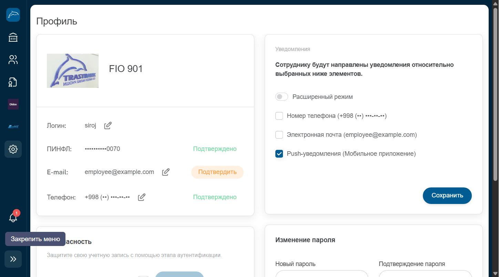

Профиль пользователя
Личные данные пользователя, настройки безопасности, способ подтверждения платежей и смена пароля.
Где находитсяРаздел «Настройки» (иконка шестерёнки) → «Профиль» в группе «Настройки пользователя».

Реальные ФИО, ПИНФЛ, e-mail и телефон на скриншоте скрыты в целях конфиденциальности.
Из чего состоит страница
- 1Аватар и ФИОФото профиля (можно изменить по клику) и полное имя пользователя.
- 2Логин, ПИНФЛ, E-mail, ТелефонОсновные идентификационные данные. Иконка карандаша рядом с полем позволяет запросить изменение. Статусы «Подтверждено» / «Подтвердить» показывают, верифицирован ли канал связи.
- 3БезопасностьПереключатель «Двухэтапная аутентификация» усиливает защиту входа кодом подтверждения.
- 4Метод подтверждения оплатыВыбор способа подтверждения платежей: «Всегда спрашивать», «Подтвердить через СМС» или «Подтвердить через ЭЦП (E-IMZO)».
- 5УведомленияЧекбоксы каналов оповещений: телефон, e-mail, push-уведомления в мобильном приложении.
- 6Изменение пароляПоля «Новый пароль» и «Подтверждение пароля» с кнопкой «Сохранить» для смены пароля входа.
Пошагово
- Откройте «Настройки» → «Профиль».
- Проверьте актуальность контактных данных (e-mail, телефон).
- При необходимости включите двухэтапную аутентификацию для дополнительной защиты.
- Выберите предпочтительный метод подтверждения платежей.
- Настройте каналы уведомлений и нажмите «Сохранить».
ВажноСмена пароля и включение двухэтапной аутентификации — чувствительные операции, влияющие на доступ к счетам компании. В рамках данной документации эти действия не выполнялись и не сохранялись — форма показана только для ознакомления.
СоветРекомендуется использовать подтверждение через СМС или E-IMZO вместо «Всегда спрашивать» для более быстрого и безопасного согласования платежей.